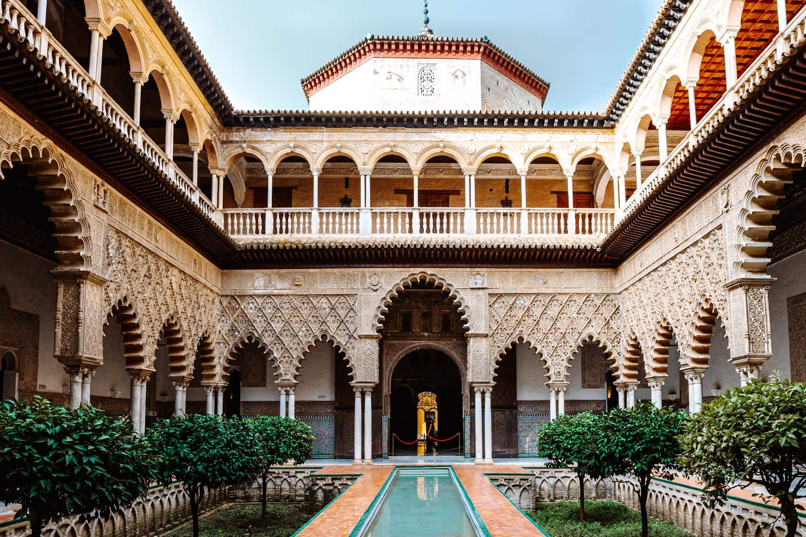
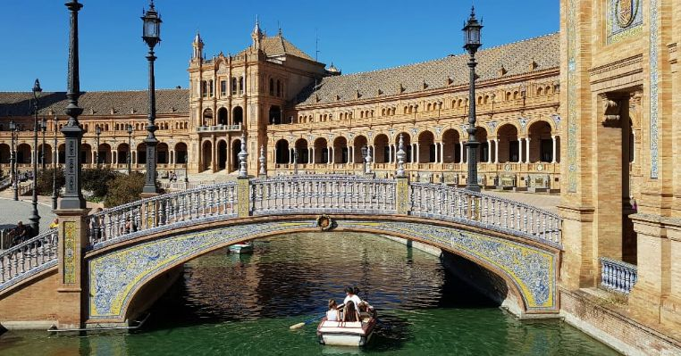
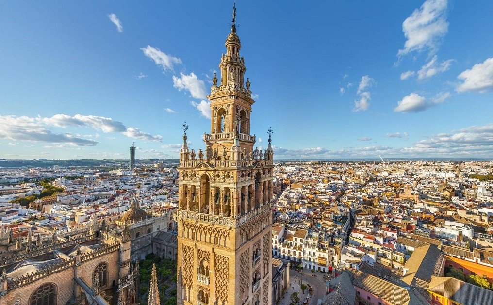

Sevilla Stadsoverzicht
Sevilla is de hoofdstad van Andalusië en een van de mooiste steden van Spanje. Het staat bekend om zijn rijke Moorse erfgoed, indrukwekkende monumenten en levendige cultuur.

Basisinformatie
- Ligging: Zuid-Spanje, aan de rivier de Guadalquivir
- Bevolking: Ongeveer 1.9 miljoen mensen
- Oprichtingsjaar: 2e eeuw v.Chr.
- Taakgebied: Andalusië
- Klimaat: Mediterraan klimaat, hete zomers en milde winters
Bezienswaardigheden in Sevilla
- De Giralda – Een indrukwekkende minaret die nu als klokkentoren fungeert.
- Het Koninklijk Paleis van Sevilla (Alcázar) – Een schitterend paleis met tuinen en tuinen.
- De Plaza de España – Een prachtig plein met een indrukwekkend gebouw en een kanaal.
- De kathedraal van Sevilla – De grootste gotische kathedraal ter wereld en het graf van Christopher Columbus.
- Het Museum voor Schone Kunsten – Een van de beste musea van Spanje voor kunstwerken uit de Renaissance en Barok.
Lokale Activiteiten in Sevilla
Flamenco Show in Triana
Ervaar de passie van flamenco in de beroemde wijk Triana, de geboorteplaats van deze kunstvorm.
Boottocht op de Guadalquivir
Verken de stad vanaf het water met een boottocht over de rivier Guadalquivir en geniet van het uitzicht op de stad.
Wandel door de oude wijk Santa Cruz
Verdwaal door de smalle straatjes van de oude Joodse wijk van Sevilla, een van de mooiste en meest historische buurten van de stad.
Lokale Gerechten en Drankjes
Sevilla is beroemd om zijn heerlijke tapas en lokale gerechten. Probeer zeker de "salmorejo" (koude tomatensoep), "jamón ibérico" (Iberische ham), en een glas "sangria" of "tinto de verano" op een van de gezellige terrassen.
Winkelen en Nachtleven in Sevilla
Winkelstraten
Sevilla biedt een uitstekende winkelervaring, van lokale ambachtelijke markten tot luxe boetieks in de belangrijkste winkelstraten.
Nachtclubs en Bars
De stad staat ook bekend om zijn bruisende nachtleven. Van gezellige tapasbars tot stijlvolle nachtclubs, Sevilla biedt voor ieder wat wils.